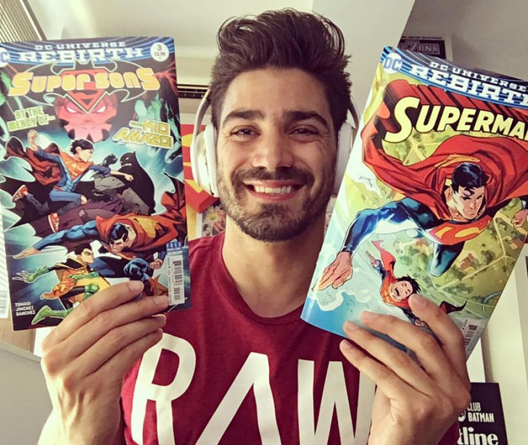

Dan Mora es un artista de cómics e ilustrador nacido en Costa Rica. Es conocido principalmente por su estilo muy detallado y dinámico, con influencias del cómic americano clásico y el diseño moderno. Trabaja mucho para DC Comics y ha dibujado personajes como Batman, Superman, Wonder Woman y la Justice League. Uno de sus trabajos más conocidos es en la serie Batman/Superman: World’s Finest, junto al guionista Mark Waid, que fue muy bien recibida por fans por su estilo “clásico pero moderno”. También ha trabajado en portadas (covers) y en proyectos como Klaus (con Grant Morrison), además de varios títulos de acción y superhéroes. Su arte se destaca por ser muy limpio, expresivo y con mucha energía en las escenas de acción.

Jorge Jiménez es un dibujante de cómics español, nacido en Granada en 1986, y actualmente uno de los artistas más importantes de DC Comics. Es conocido sobre todo por su trabajo en Batman, donde ha sido uno de los artistas principales de la serie desde 2020, definiendo el estilo visual moderno del personaje. También ha trabajado en títulos como Superman, Justice League y Super Sons. Su estilo se caracteriza por ser muy dinámico, detallado y “cinematográfico”, con personajes expresivos y escenas de acción muy fluidas. Por eso hoy en día es considerado uno de los mejores artistas de superhéroes de la actualidad dentro de DC.
Alex Ross es un artista estadounidense muy reconocido en el mundo del cómic, famoso por su estilo hiperrealista que hace que los superhéroes parezcan personas reales pintadas con muchísimo detalle. Trabaja principalmente para DC Comics y Marvel, y se hizo conocido por transformar personajes como Superman, Batman o Wonder Woman en figuras con apariencia casi fotográfica, usando luces, sombras y expresiones muy realistas. También es muy importante su trabajo en la serie Kingdom Come, donde muestra una versión más madura y simbólica de los héroes del futuro.